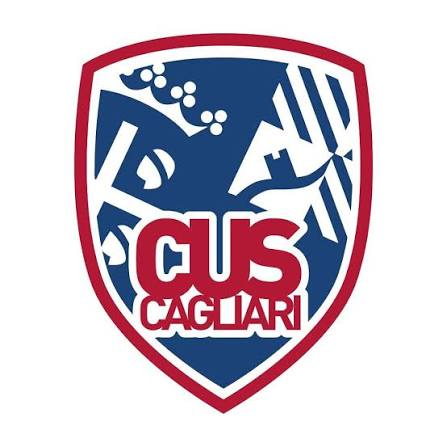

È disponibile una nuova versione della pagina.

Serie C regionale Sardegna 2026/27 · girone unico, 12 squadre, 22 partite
Calendario sempre aggiornato. Aggiungi le partite al tuo calendario come abbonamento: gli spostamenti decisi dalla FIP, gli arbitri e i risultati arrivano da soli.
Il calendario compare anche sul telefono.
Scarica il file .ics e importalo una volta. Gli eventi importati non seguono le variazioni della FIP: per restare aggiornato usa l'abbonamento.
Ogni app aggiorna gli abbonamenti con i propri tempi: possono passare alcune ore.
La stagione regolare termina il 20 marzo 2027. Nel 2025/26 le prime otto classificate hanno disputato i playoff, con serie al meglio delle tre gare, e la vincitrice si è giocata la promozione in Serie B Interregionale. Le ultime tre hanno disputato i playout per evitare la retrocessione in Divisione Regionale 1.
La formula descritta è quella della stagione 2025/26. Quella del 2026/27 non compare nel comunicato e al 30 settembre 2026 la FIP Sardegna non l'ha ancora resa nota.